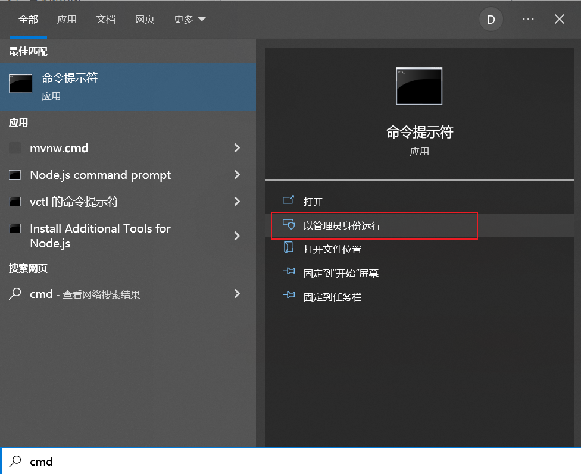
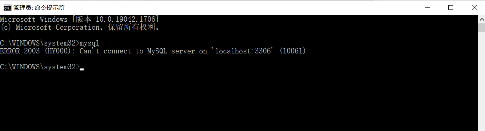
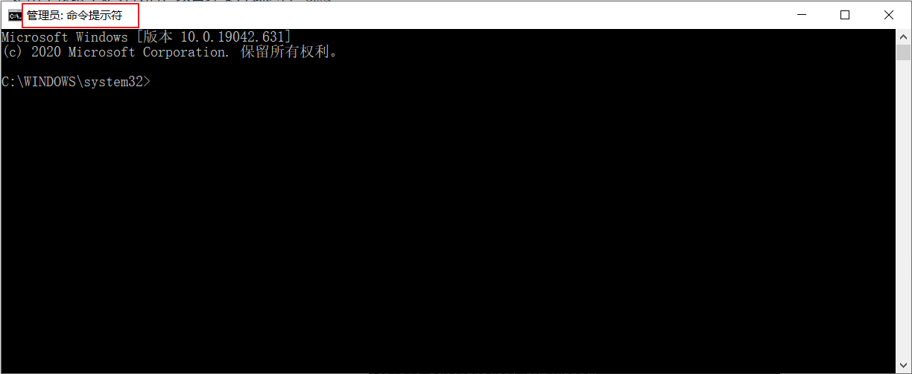
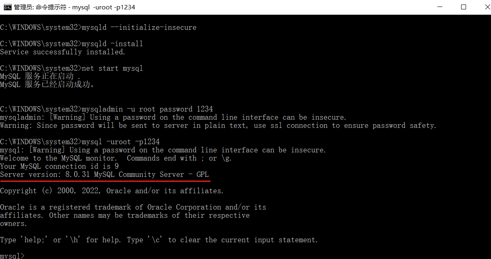
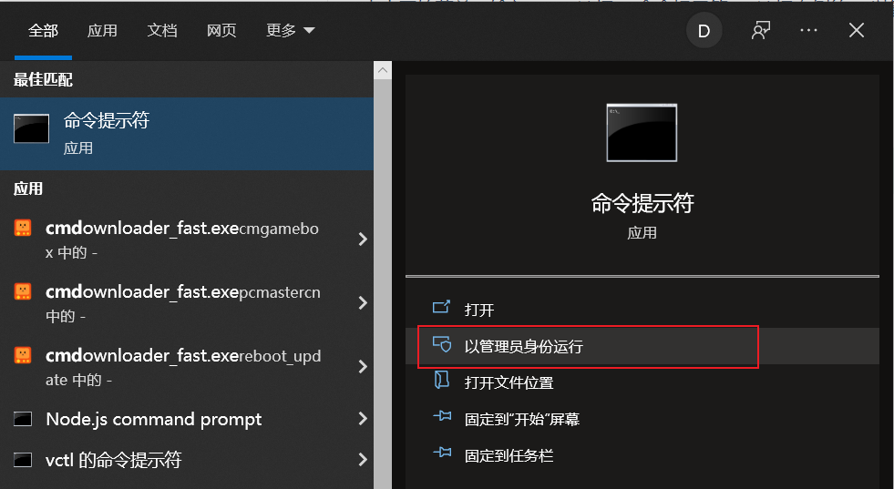

一、下载
点开下面的链接：https://dev.mysql.com/downloads/mysql/

点击Download 就可以下载对应的安装包了, 安装包如下: 
二、解压
下载完成后我们得到的是一个压缩包，将其解压，我们就可以得到MySQL 8.0.31 的软件本体了(就是一个文件夹)，我们可以把它放在你想安装的位置 。

三、配置
1. 添加环境变量
环境变量里面有很多选项，这里我们只用到
Path这个参数。为什么在初始化的开始要添加环境变量呢？在黑框(即CMD)中输入一个可执行程序的名字，Windows会先在环境变量中的
Path所指的路径中寻找一遍，如果找到了就直接执行，没找到就在当前工作目录找，如果还没找到，就报错。我们添加环境变量的目的就是能够在任意一个黑框直接调用MySQL中的相关程序而不用总是修改工作目录，大大简化了操作。
右键此电脑→属性，点击高级系统设置

点击环境变量

在系统变量中新建MYSQL_HOME

在系统变量中找到并双击Path

点击新建

最后点击确定。
如何验证是否添加成功？
右键开始菜单(就是屏幕左下角)，选择命令提示符(管理员)，打开黑框，敲入mysql，回车。

如果提示Can't connect to MySQL server on 'localhost'则证明添加成功；

如果提示mysql不是内部或外部命令，也不是可运行的程序或批处理文件则表示添加添加失败，请重新检查步骤并重试。
2. 初始化MySQL
==以管理员身份，运行命令行窗口：==

在刚才的命令行中，输入如下的指令：
|
|

稍微等待一会，如果出现没有出现报错信息，则证明data目录初始化没有问题，此时再查看MySQL目录下已经有data目录生成。
tips：如果出现如下错误

是由于权限不足导致的，以管理员方式运行 cmd
3. 注册MySQL服务
命令行（注意必须以管理员身份启动）中，输入如下的指令，回车执行：
|
|

现在你的计算机上已经安装好了MySQL服务了。
4. 启动MySQL服务
在黑框里敲入net start mysql，回车。
|
|

5. 修改默认账户密码
在黑框里敲入mysqladmin -u root password 1234，这里的1234就是指默认管理员(即root账户)的密码，可以自行修改成你喜欢的。
|
|

四、登录MySQL
右键开始菜单，选择命令提示符，打开黑框。
在黑框中输入，mysql -uroot -p1234，回车，出现下图且左下角为mysql>，则登录成功。
|
|

到这里你就可以开始你的MySQL之旅了！
退出mysql：
|
|
登陆参数：
|
|
五、卸载MySQL
如果你想卸载MySQL，也很简单。
点击开始菜单，输入cmd，选择 “命令提示符”，选择右侧的 “以管理员身份运行”。

- 敲入
net stop mysql，回车。
|
|

- 再敲入
mysqld -remove mysql，回车。
|
|

- 最后删除MySQL目录及相关的环境变量。
至此，MySQL卸载完成！